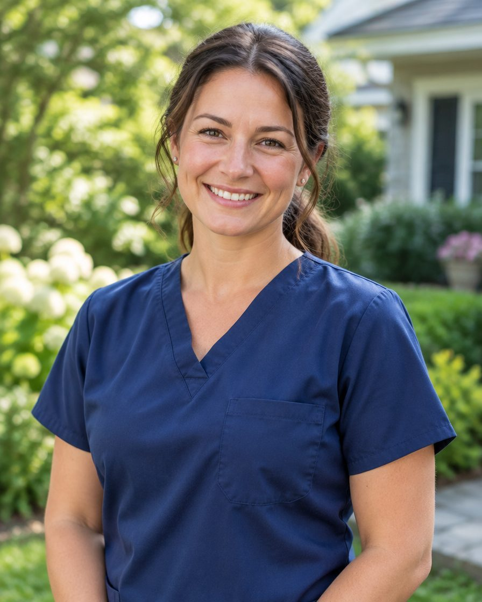

Our story
Our story began with a dedication to help families navigate the challenges of organizing quality elder care. We know how emotional and important caregiving decisions can be. That is why we built our service on empathy, reliability and respect.
We believe every person deserves thoughtful support that honors their legacy and preserves dignity at every stage of life.
What guides us
Dedicated Care Living provides compassionate care to our extended family, our clients. We commit to excellence through professionalism and confident caregivers.
Our goal is to nurture growth where tradition meets innovation, using technology and advocating for care in the community.
To be at the forefront of care, a leader in innovation, and a champion in the community.
We envision elder care that adapts to the changing needs of our community, so families across Santa Clara County and nearby San Mateo County are never left wondering about their loved one.

How we care
We bring these services together in a way that promotes independence and dignity, and we fit them to the rhythm of each household.
Someone who gets to know your loved one and their routine.
Help with the everyday tasks that keep life comfortable.
Gentle reminders and a tidy, safe home.
Patient, familiar care through recovery and memory loss.
We use technology for up-to-date caregiver logs and stay connected with families, so you always know how your loved one is doing.
The values behind our care
We empathize with our clients' needs and respond with care from the heart.
We are committed to delivering and demonstrating excellent professional service.
We honor our commitments and never compromise integrity.
We put ourselves in our clients' position and stay mindful of the care we provide.
We pair traditional home care with today's technology to give clients and families the best care.
Families and clients trust us for compassionate, professional care that meets high standards.
Companionship and socialization help clients feel connected and supported.
Meet the team
The people who lead Dedicated Care Living and guide the care your family receives.
Kevin McClenahan
As the owner of Dedicated Care Living, Kevin McClenahan is committed to helping seniors and adults remain safe, comfortable, and independent in their own homes. He believes exceptional home care goes beyond assisting with daily activities. It requires compassion, trust, personalized attention, and open communication with clients and their families.
Kevin brings a unique healthcare perspective to Dedicated Care Living through more than 25 years of experience as a physical therapist. He is also a partner at Pro Performance Therapy Group, where he continues to help patients improve mobility, recover from injuries, and maintain their independence. Throughout his career, he has developed a deep understanding of the physical and emotional challenges individuals and families face as they age or experience changes in their health.
This experience shapes his approach to home care, with an emphasis on safety, fall prevention, mobility, caregiver quality, and individualized support. Kevin is passionate about building lasting relationships with families and ensuring that every client is treated with the dignity, respect, and compassion they deserve.
Kris Owiesny
Kris Owiesny brings extensive nursing leadership experience and healthcare expertise to Dedicated Care Living. She also serves as Director of Imaging Services at Stanford Health Care and holds advanced certifications in nursing leadership, ambulatory care, emergency preparedness, and process improvement.
As DCL's Nursing & Healthcare Advisor, Kris serves as a valuable healthcare resource, offering professional insight and guidance on client care questions when needed. Her experience in nursing, patient safety, and healthcare operations provides an additional level of knowledge and support to our leadership team, reinforcing our commitment to thoughtful, personalized, high-quality non-medical home care.
What sets Dedicated Care Living apart
Dedicated Care Living combines the personal attention of a locally owned home care agency with a healthcare-informed approach. Led by an owner with over 25 years of experience as a physical therapist and supported by a Nursing & Healthcare Advisor, we bring a unique understanding of aging, mobility, safety, and individual care needs. We emphasize open communication, carefully selected caregivers, and personalized care plans that adapt as your loved one's needs change. Our commitment to compassion, reliability, and exceptional service reflects our philosophy: “Thoughtful Care From the Heart.”
What families say
We extend our highest recommendation to Josie and the team at Dedicated Care Living.
Annette M
Dedicated Care Living was responsive and easy to work with. They provided a great, experienced caregiver that was familiar with the mini-stroke (TIA) my father suffered. He was able to help him recover as he lives alone, take him to his PT appointments, drive him to the store and help him with his exercises as well as go on walks with him. We are really appreciative for the care he received as well as the ease with all the paperwork and scheduling from Dedicated Care Living. We would recommend them to other families.
Family member
Our caregiver was a companion for my dad and was so caring and thoughtful, it was like he was an instant family member!! He not only helped with the physical activities that my dad needed, but he was also someone to have an enjoyable conversation with.
Family member
Dedicated Care Living has provided exceptionally compassionate and professional caregivers, people who genuinely care about their clients. My mom has advanced dementia, and the caregivers who came to help were more than just caregivers; they became her friends. They made her feel comfortable, supported, and happier despite her health challenges. I am truly grateful for Dedicated Care Living. They are not a big corporation or a franchise, they are neighborhood care services offering heartfelt, reliable, and meaningful care. Thank you.
Client
Watch and learn with us
Tips for seniors and families from the Dedicated Care Living channel. Today: how to use social media safely.
Watch on YouTube

Want to be part of Dedicated Care Living?
If you are looking for work, we offer a range of opportunities that can help you find the right job for your skills and experience.
Apply nowLocally owned in Los Gatos
Our office is on Lark Ave, and our caregivers travel to families in Los Gatos, San Jose, Campbell, Saratoga and Monte Sereno, Morgan Hill and Gilroy.
Getting started is simple
Tell us what your loved one needs and how many hours of help would make a difference.
Together we match the right caregiver and schedule to your family.
Your caregiver starts, and we stay in touch as needs change.
Talk with our team
Looking for someone you can trust to care for your loved one? Send a message or call. We will get back to you and help you find the right fit.
(408) 533-8735
16615 Lark Ave #105, Los Gatos, CA 95032
Awards and accreditation